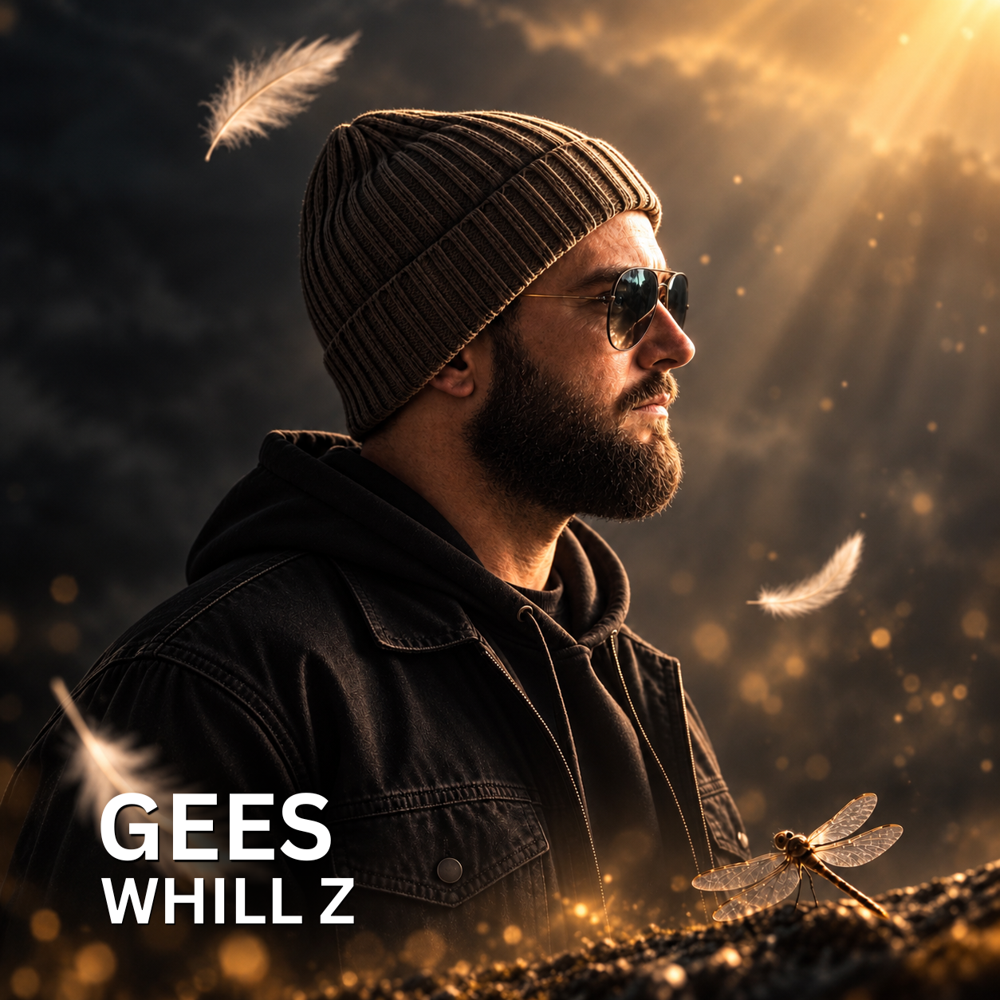

Meet Whill Z
A long road.
A dream that
never left.
Whill Z is a South African solo artist bringing years of stages, bands and musical exploration into a sound of his own.
After years of performing and creating with others, this project is something deeply personal: a dream he has carried for a long time, finally finding its voice.
Blending hip-hop and electronic music in English, Afrikaans and plenty of Mengels, Whill Z makes space for the good times and the things we do not always know how to talk about.
At its heart is a connection to the underdog. The person who feels overlooked. The one starting again. The one holding onto a dream while life keeps getting in the way.
This music is for turning up, letting loose, getting that confidence boost and knowing you’re tuff.
Laat dit juig
Fun. Energy. Heart. Meaning. Sometimes serious. Sometimes random. Always real. This is Whill Z.